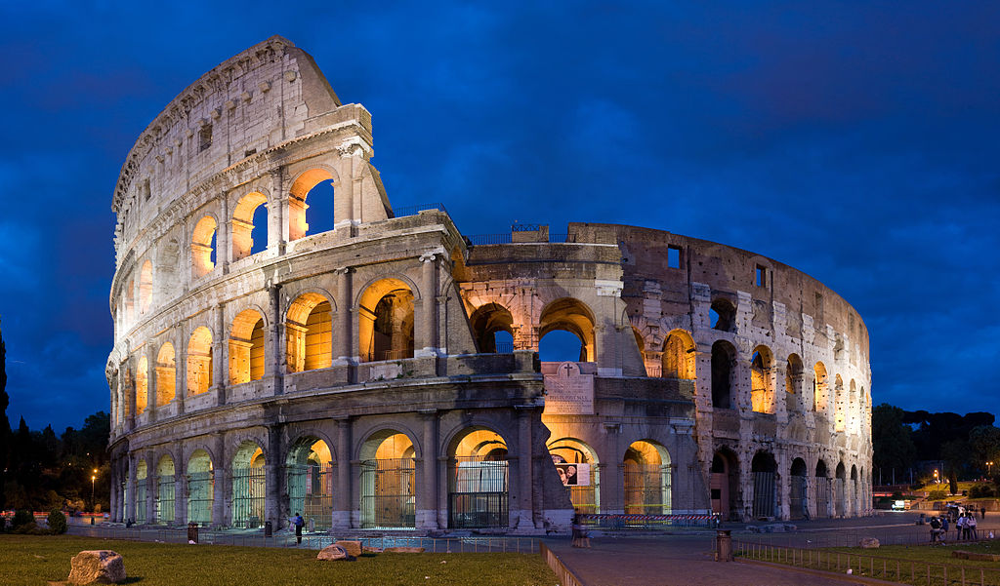
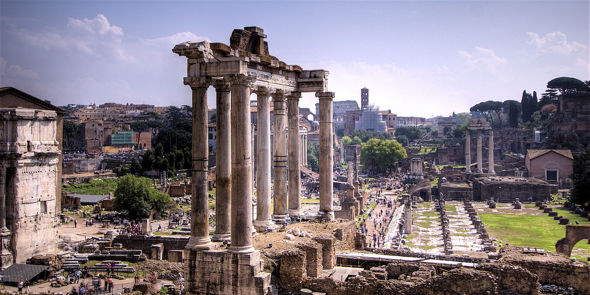
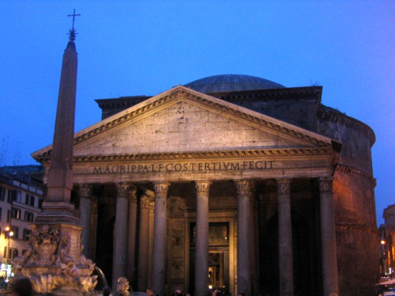
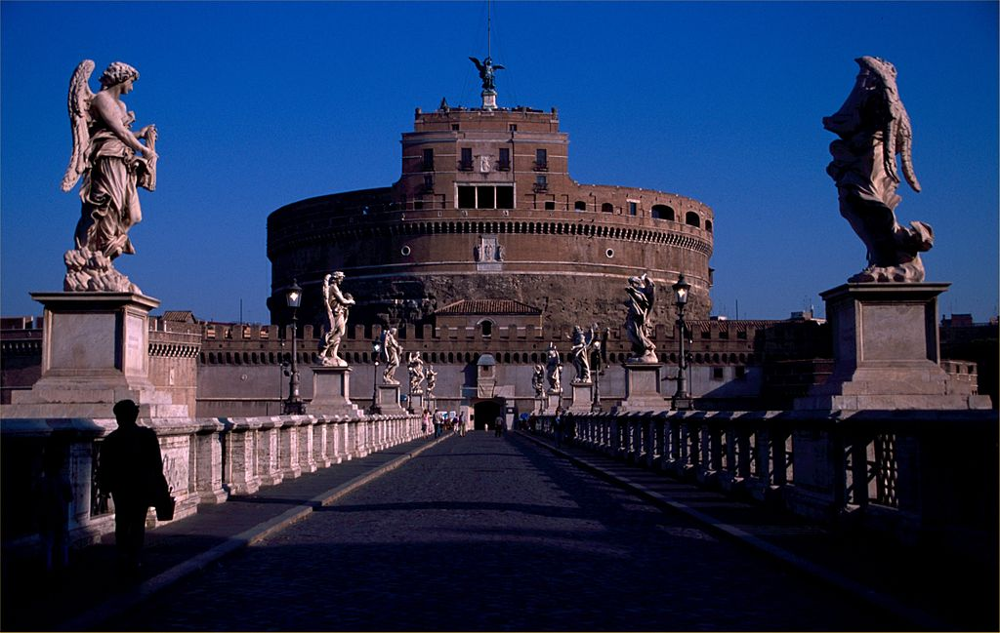
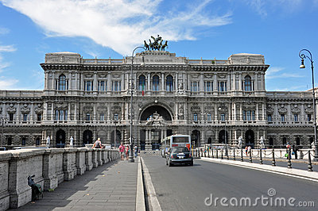
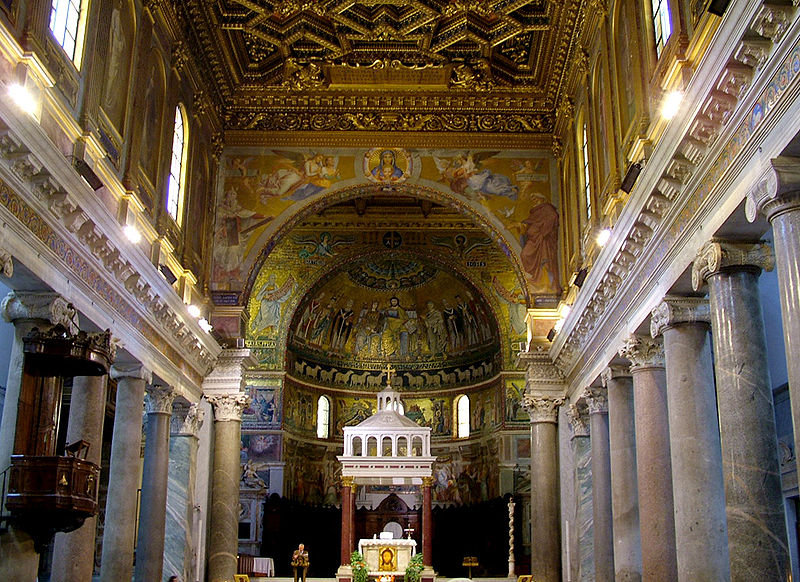
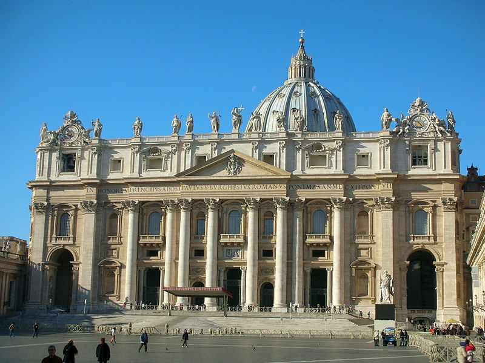
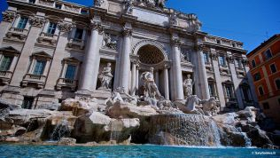

| Art & Architecture Name | Art & Architecture Picture | Art & Architecture Description |
|---|---|---|
| Colosseum |  | Arguably one of Rome's most famous and iconic monuments, it is one of the Roman world's biggest amphitheatres and is one of the city's most visited attractions. It is regarded as being a wonder of the medieval world |
| Roman Forum |  | The Forum of ancient Rome, and the centre of the city's politics and business at the time. |
| Pantheon |  | It is a classical building in the city, originally built by Marcus Agrippa as a temple to all the gods of Ancient Rome, and rebuilt in the early 2nd century AD. A near-contemporary writer, Cassius Dio, speculates that the name comes from the statues of many gods placed around the building, or from the resemblance of the dome to the heavens. |
| Castel Sant'Angelo |  | Once the "Mausoleum of Hadrian", it later became a papal residence and currently hosts a major museum. |
| Palazzo di Giustizia |  | Started in 1889 and completed in 1910, the Palazzo di Giustizia (literally, "Palace of Justice") currently hosts Italy's main law courts. These courts are stituated in a grand turn-of-the-century neo-Renaissance palace. |
| Santa Maria in Trastevere |  | One of the oldest churches in the city, opened in the mid-4th century AD, it is a minor titular basilica in the Trastevere quarter. |
| St Peter's Basilica |  | Found in the Vatican City, it is near where the Pope resides, and it is one of the most important centres for Christian pilgrimage, and is commonly regarded as the "home of the Roman Catholic Church", since it is where St Peter set up the first Christian Church |
| Trevi Fountain |  | One of the most recognizable and iconic monuments in the city, the Trevi Fountain was designed and completed in the 18th century. Tourists come to the fountain in order to throw a coin, which is, according to a local legend, supposed to bring good luck. It was also famous for having featured in a major scene of Federico Fellini's 1960 La Dolce Vita. |